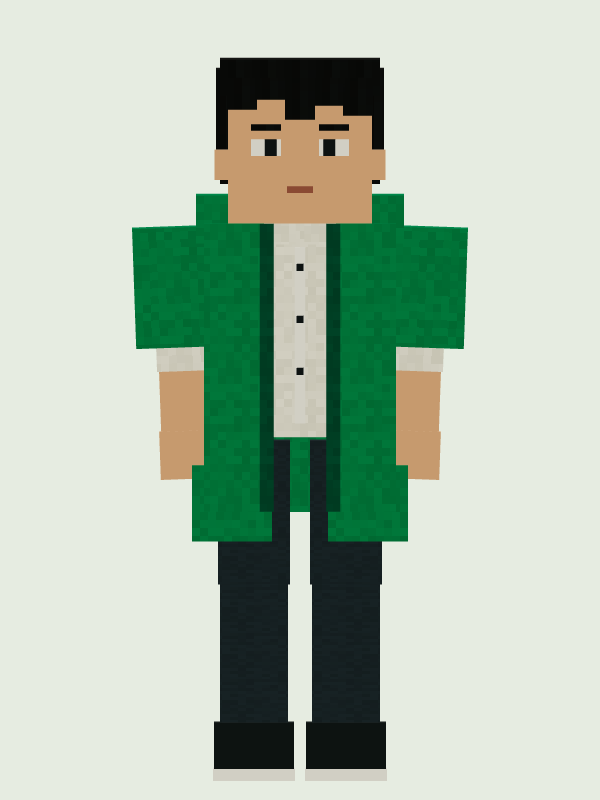
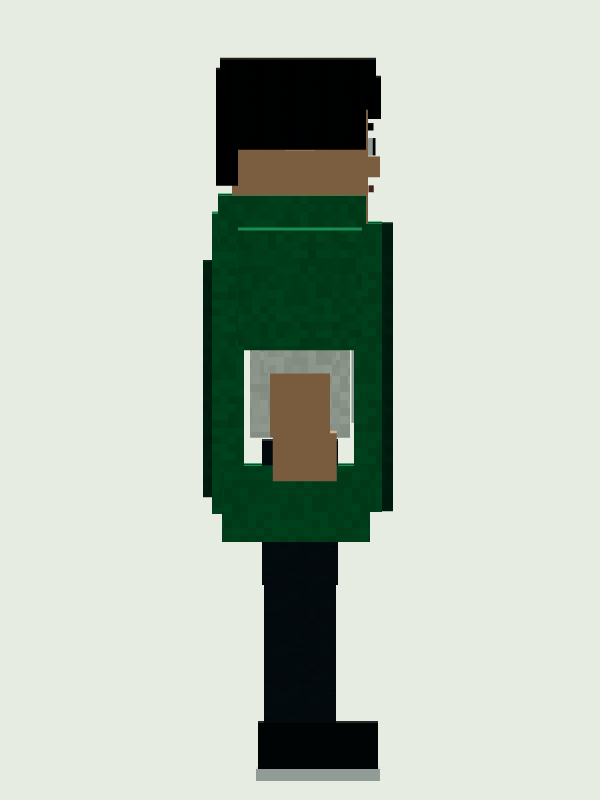
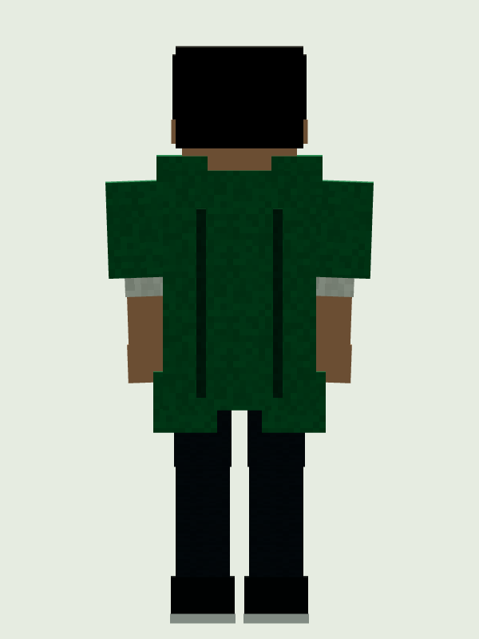
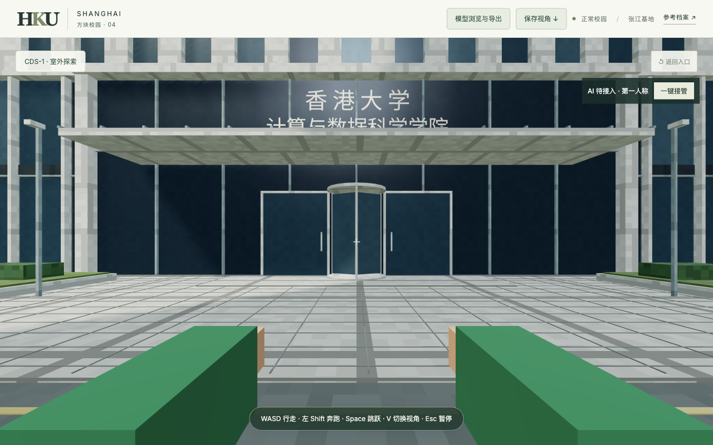
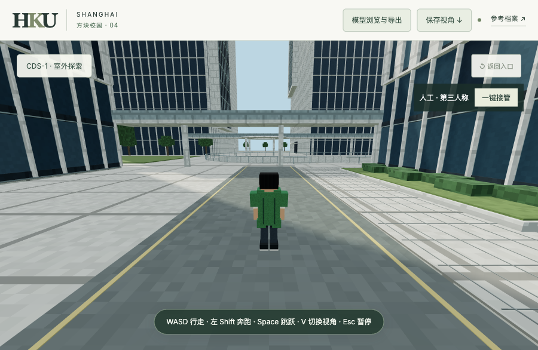
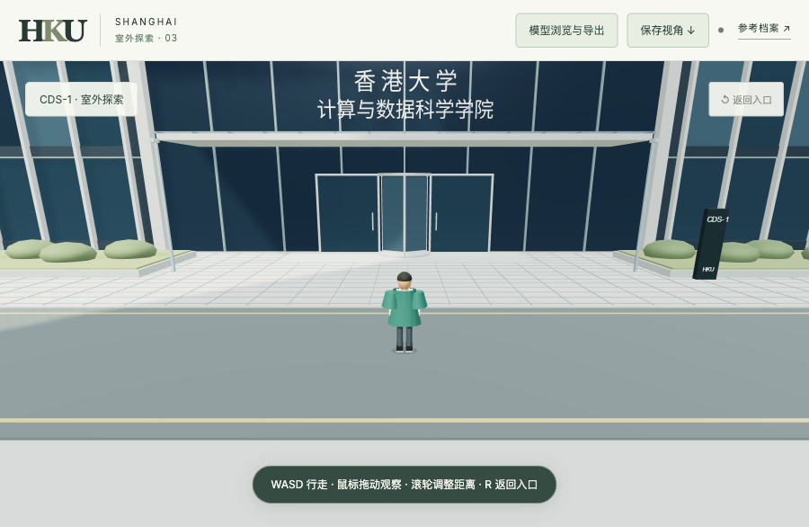
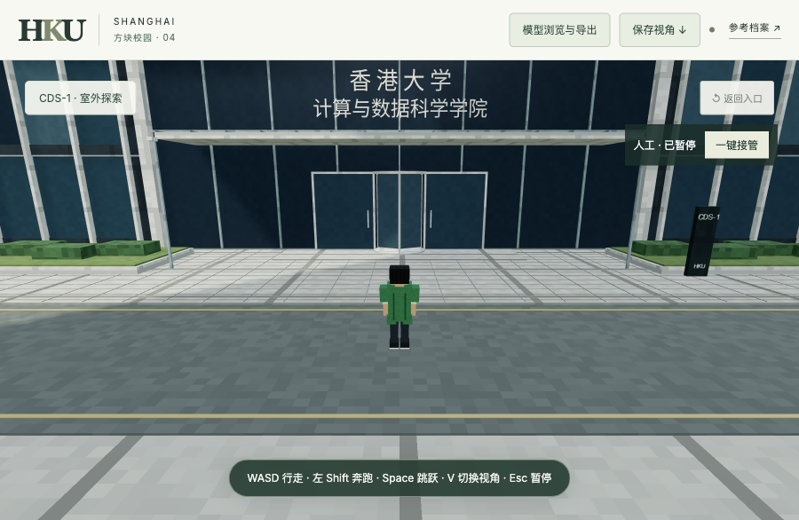
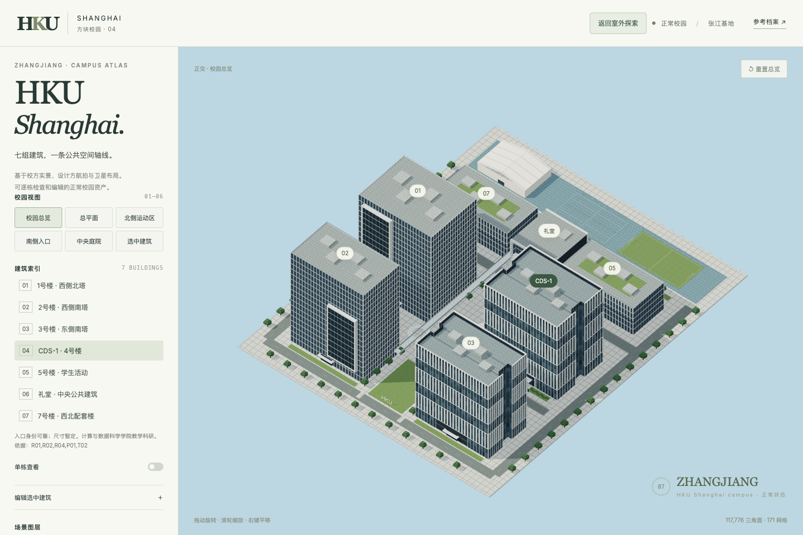

HKU SHANGHAI / VERSION 04 / 2026-11-13
方块校园，绿色长袍。
保留现有实景依据下的建筑体量与位置，重做人物、像素材质和跑跳控制。以下图片均来自真实运行的 Three.js 资产，没有用生成图替代实机画面。
完整短发 · 三面检查

正面：完整发际线、少量刘海、像素五官、白色内搭与开襟。
侧面：头顶、两侧和后脑连续覆盖，方块短袖与袍摆。
背面：完整黑色后发、绿色袍身和简化背褶。第一／第三人称

第一人称眼高 1.64 m；隐藏头部，仅显示绿色袖臂。
第三人称显示完整角色；两种视角共用位置、速度与碰撞。实际跑跳录像
约 6.6 秒连续键鼠录屏：行走、奔跑、跳跃、空中两次 V 切换、转向与继续前进。本段在 Ego Lite 的拖动兼容模式录制；标准 Chrome 的 Pointer Lock 与实际 W 行走另外实测。
同视角前后对照

修改前 v3，固定入口机位。
v4 同一位置、57° 视场角与 9 m 机位；保留门厅与窗格结构。校园整体

七组楼栋与中央公共空间布局沿用既有参考。绝对尺寸与隐藏结构仍为估算。
关键实景依据
本轮没有增加新的测绘结论。尺寸、层数、隐藏立面、屋顶设备和步道连接标高仍按此前证据等级标注。方块树冠和像素纹理属于原创美术处理，不是对植物或材料的测量。
全校参考索引 · 上一轮实景修正依据 · 返回游戏